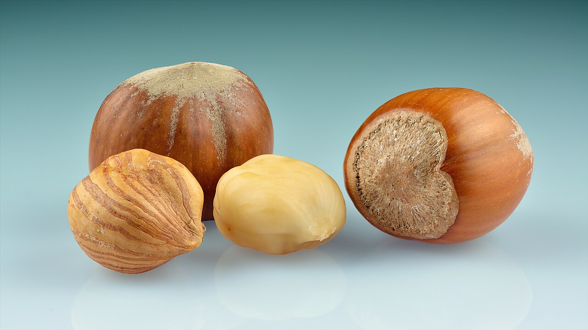
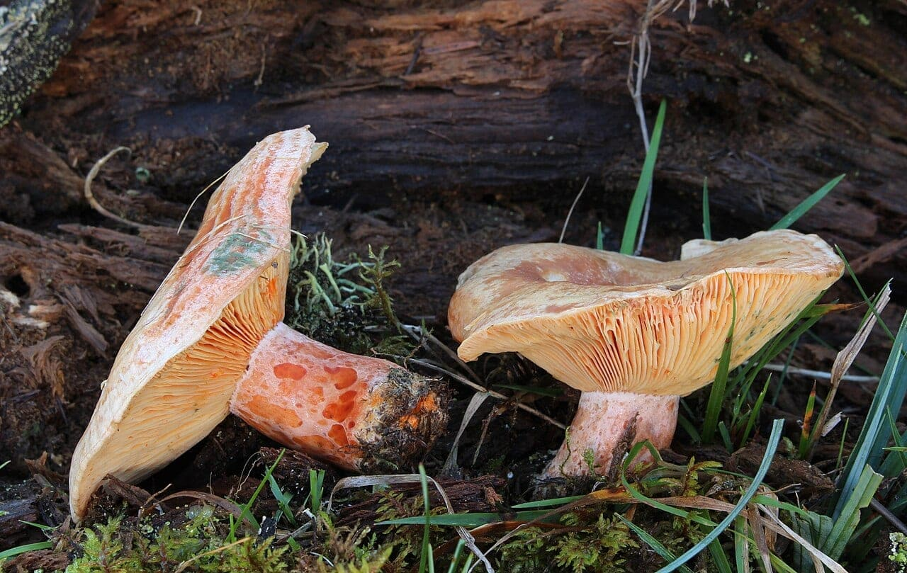
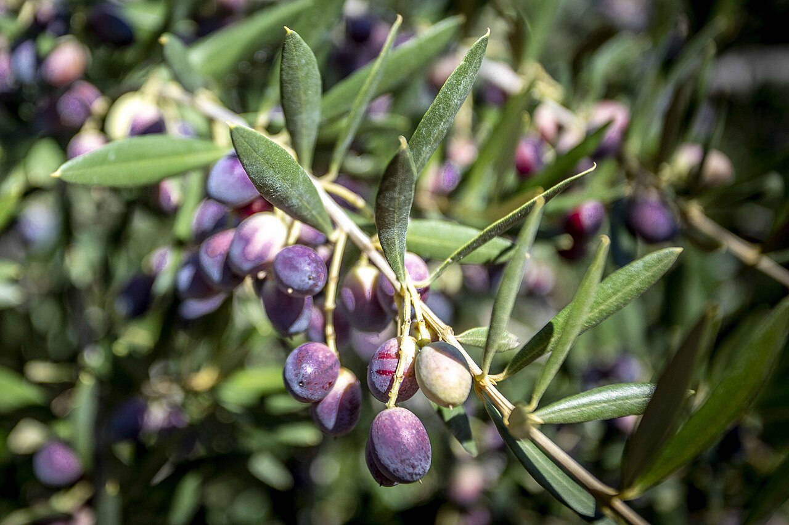

Hay una manera de comer bien en esta provincia que no cuesta dinero: comer lo que toca. El producto de temporada está mejor, suele costar menos y casi siempre viene de más cerca.
Este es el calendario que seguimos nosotros. No lleva fechas de ningún año concreto, porque las temporadas no funcionan así: funcionan con meses, con ferias que caen siempre por las mismas semanas y con un par de costumbres que no se mueven nunca. Guárdalo y vuelve cada mes.
Enero
El calçotEl calçot en plena forma. El último domingo de enero, Valls celebra la Gran Festa de la Calçotada —lo hace desde 1982— y recibe entre treinta y cinco mil y cuarenta mil visitantes; en 2027 llega a su cuadragésima quinta edición. En la huerta, cítricos y las primeras alcachofas.
Leer: la historia del calçot · manual de supervivencia en una calçotada
Febrero
La galeraCambrils abre el año gastronómico con las Jornades de la Galera i la Cuina Marinera, que arrancan a primeros de febrero y se alargan hasta marzo. La galera es ese crustáceo que durante décadas acabó en el caldo del mercado y que ahora empieza a salir de protagonista. Sigue el calçot, y la alcachofa gana terreno.
Marzo
La carxofaLas jornadas de la galera se solapan con las de la carxofa, también en Cambrils; en alguna edición las han juntado bajo un nombre que lo dice todo: «Les Reines de Cambrils». Son las últimas semanas buenas del calçot — a partir de abril la cebolla se pasa y se vuelve fibrosa.

Abril
El menjablancGuisantes, habas y espárragos. Y un postre que es puro Reus y pura Edad Media: el menjablanc, almendra, leche y canela, sin una gota de huevo.
Leer: el menjablanc de Reus
Mayo
Las cireresEmpieza la cereza, que en Cataluña va de mayo a julio, y el mercado cambia de color de una semana para otra. Siguen las habas y los guisantes, y el mar empieza a dar de lo bueno.
Junio
La gamba y la cocaCorpus cae entre finales de mayo y mediados de junio —se mueve cada año— y en Reus eso significa coca amb cireres. Es también el mes de la gamba de Tarragona y el de sentarse a tomar un vermut sin mirar el reloj.
Leer: la coca amb cireres · la gamba de Tarragona · Reus, capital del vermut
Julio
El marLa gamba roja en su mejor momento, pescado azul y el primer tomate que de verdad sabe a algo. Cada tarde, en el Serrallo, se subasta lo que han traído las barcas.
Leer: la subasta del Serrallo
Agosto
El tomate y la higueraTomate, higos y pescado de playa. Y a finales de mes, en los campos del Camp de Tarragona, empieza a moverse la avellana.
Septiembre
La avellanaLa campaña de la avellana arrancaba tradicionalmente el 11 de septiembre. La DOP Avellana de Reus ampara cinco variedades en seis comarcas. Del 21 al 25, Reus celebra Misericòrdia. Y en las viñas, vendimia.

Octubre
Los boletsRovellons, pinetells y ceps en las montañas de Prades. El pico va de mediados de octubre a mediados de noviembre y, año tras año, llega un poco más tarde. Vendimia tardía en las viñas altas, y las primeras castañas.
Leer: los bolets de Prades

Noviembre
El oli nouEl día 1, Castanyada: castañas, boniatos y panellets. A mediados de mes, Reus acoge la Fira de l'Oli Nou de la DOP Siurana. Vuelve el calçot, y con el frío vuelve la clotxa —en Garcia la celebran el día 15—. Y los bolets siguen dando.
Leer: por qué el aceite nuevo pica · los panellets · la clotxa

Diciembre
El SerralloLa Navidad dispara el precio del rape, la gamba roja y el escamarlà en la lonja de Tarragona: son los tres productos más caros y más buscados del mes. El calçot, en plena temporada. Y para nosotros, el mes de la Gala.
Faltan cosas en este calendario y lo sabemos: la galera, la carxofa, las cireres, la vendimia y las castañas todavía no tienen artículo propio en esta web. Están en la lista. Y cada una, como ves, ya tiene su mes asignado.